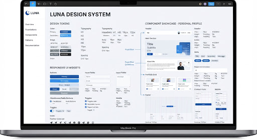
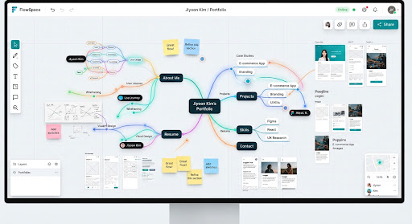

check_circle
이메일 주소가 복사되었습니다!
활동 이력·사진·프로젝트 상세 내용과 외부 링크는 예시입니다.
새로운 프로젝트 협업 가능
윤찬하 (Yun Chanha)
언론홍보영상학부 대학생
영상과 미디어를 탐구하는
언론홍보영상학부 대학생
영상과 미디어에 관심을 가지고 배우는 언론홍보영상학부 대학생입니다. 프로필 웹사이트, AI 챗봇, 날씨 웹사이트 개발 프로젝트를 소개합니다.
terminal
Background
About Me
school
Education
언론홍보영상학부
대학생 · 영상과 미디어
영상과 미디어를 전문 분야로 삼아 학습하고 있습니다.
work
Experience
영상 제작 활동 (예시)
2022 — 현재
TechLabs
영상 콘텐츠의 기획과 제작 과정을 경험했습니다. (예시 활동)
미디어 프로젝트 활동 (예시)
2020 — 2022
Studio Horizon
다양한 미디어 콘텐츠를 탐구하고 프로젝트를 진행했습니다. (예시 활동)
interests
관심 분야 & 전문 역량
영상
미디어
Portfolio
Selected Projects
웹사이트와 AI 챗봇 개발 프로젝트를 소개합니다.
웹사이트프로필
프로필 웹사이트 개발
자기소개와 전문 분야, 프로젝트를 소개하는 개인 프로필 웹사이트입니다. 다양한 화면에 맞춰 콘텐츠를 확인할 수 있도록 구성합니다. (예시 설명)
trending_up자기소개
star반응형 웹

생성형 AI자연어 처리
AI 챗봇 개발
생성형 AI를 활용해 사용자의 질문에 답하는 챗봇을 개발하는 프로젝트입니다. 자연어 처리와 대화 흐름을 연구합니다. (예시 설명)
speed대화형 AI
widgets질의응답

날씨 정보웹사이트
날씨 웹사이트 개발
지역별 날씨 정보를 확인할 수 있는 웹사이트를 개발하는 프로젝트입니다. 기온과 날씨 상태를 알아보기 쉽게 보여줍니다. (예시 설명)
bolt지역별 날씨
public기온 정보
Get In Touch
연락하기
함께 멋진 프로젝트를 만들어볼까요? 언제든 편하게 연락해 주세요.
outgoing_mail
Direct Email
ych@example.com
빠른 메시지 남기기
입력한 내용으로 메일 작성창을 엽니다. 발송은 메일 앱에서 완료해 주세요.
소셜 미디어 & 프로필 링크
© 2026 윤찬하. Crafted with care & precision.
활동 이력·사진·프로젝트 상세 내용과 외부 링크는 예시입니다.